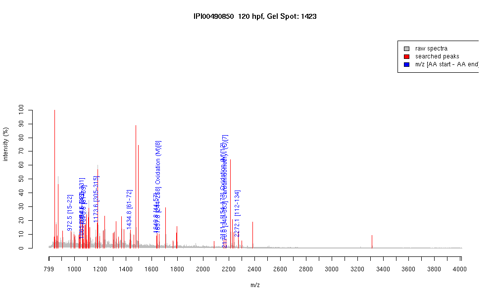

| Name | "Aldolase c, fructose-bisphosphate" |
|---|---|
| MW | 39234.9 |
| PI | 6.21 |
| Mascot Protein Score | 70 |
| Masses (matched / unmatched) | 11 / 62 |

| Peptide | MZ (calc) | MZ (observed) | Error (DA) | Error (PPM) | Start | Stop | Modifications |
|---|---|---|---|---|---|---|---|
| ELQDIAQR | 972.5109 | 972.5143 | 0.0034 | 3 | 15 | 22 | |
| AATEEFIKR | 1064.5735 | 1064.5986 | 0.0251 | 24 | 323 | 331 | |
| DGADFAKWR | 1065.5112 | 1065.5599 | 0.0487 | 46 | 141 | 149 | |
| QLLFSADER | 1078.5527 | 1078.5508 | -0.0019 | -2 | 61 | 69 | |
| ALQASALSAWR | 1173.6375 | 1173.6365 | -0.001 | -1 | 305 | 315 | |
| QLLFSADERIDK | 1434.7587 | 1434.7633 | 0.0046 | 3 | 61 | 72 | |
| LNPIGVENTEENRR | 1640.8351 | 1640.8392 | 0.0041 | 2 | 44 | 57 | |
| YSSEEIAMATVTALR | 1657.8102 | 1657.8016 | -0.0086 | -5 | 244 | 258 | Oxidation (M)[8] |
| ISDTTPSELAIMENANVLAR | 2161.0806 | 2161.071 | -0.0096 | -4 | 154 | 173 | Oxidation (M)[12] |
| YVSSGTCGAAGQSLYVANHAY | 2175.9763 | 2175.9897 | 0.0134 | 6 | 343 | 363 | Carbamidomethyl (C)[7] |
| GVVPLAGTNGETTTQGLDGLSER | 2272.1416 | 2272.1458 | 0.0042 | 2 | 112 | 134 |